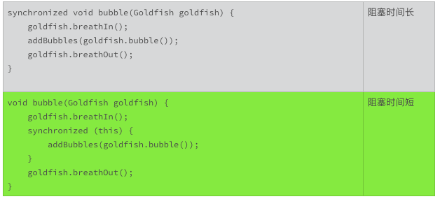

- 00 开篇词 你写的每一行代码，都是你的名片.md
- 01 从条件运算符说起，反思什么是好代码.md
- 02 把错误关在笼子里的五道关卡.md
- 03 优秀程序员的六个关键特质.md
- 04 代码规范的价值：复盘苹果公司的GoToFail漏洞.md
- 05 经验总结：如何给你的代码起好名字？.md
- 06 代码整理的关键逻辑和最佳案例.md
- 07 写好注释，真的是小菜一碟吗？.md
- 08 写好声明的“八项纪律”.md
- 09 怎么用好Java注解？.md
- 10 异常处理都有哪些陷阱？.md
- 11 组织好代码段，让人对它“一见钟情”.md
- 12丨组织好代码文件，要有“用户思维”.md
- 13 接口规范，是协作的合约.md
- 14 怎么写好用户指南？.md
- 15 编写规范代码的检查清单.md
- 16丨代码“规范”篇用户答疑.md
- 17 为什么需要经济的代码？.md
- 18丨思考框架：什么样的代码才是高效的代码？.md
- 19 怎么避免过度设计？.md
- 20 简单和直观，是永恒的解决方案.md
- 21 怎么设计一个简单又直观的接口？.md
- 22丨高效率，从超越线程同步开始！.md
- 23 怎么减少内存使用，减轻内存管理负担？.md
- 24 黑白灰，理解延迟分配的两面性.md
- 25 使用有序的代码，调动异步的事件.md
- 26 有哪些招惹麻烦的性能陷阱？.md
- 27 怎么编写可持续发展的代码？.md
- 28 怎么尽量“不写”代码？.md
- 29 编写经济代码的检查清单.md
- 30丨“代码经济篇”答疑汇总.md
- 31 为什么安全的代码这么重要？.md
- 32 如何评估代码的安全缺陷？.md
- 33 整数的运算有哪些安全威胁？.md
- 34 数组和集合，可变量的安全陷阱.md
- 35 怎么处理敏感信息？.md
- 36 继承有什么安全缺陷？.md
- 37 边界，信任的分水岭.md
- 38 对象序列化的危害有多大？.md
- 39 怎么控制好代码的权力？.md
- 40 规范，代码长治久安的基础.md
- 41 预案，代码的主动风险管理.md
- 42 纵深，代码安全的深度防御.md
- 43 编写安全代码的最佳实践清单.md
- 44 “代码安全篇”答疑汇总.md
- Q&A加餐丨关于代码质量，你关心的那些事儿.md
- 结束语 如何成为一个编程好手？.md
22丨高效率，从超越线程同步开始！
线程的同步是学习一门编程语言的难点。刚开始线程同步的困难，主要在于了解技术；跨过了基本技术的门槛后，更难的是掌握最基本的概念。
学习技术时，我们对基本概念熟视无睹，只想将宝剑尽快握在手，哪管宝剑何时该挥出的教导。学会技术后，基本概念就会回来找我们算旧账，出错一次剑，就记一笔账。账本慢慢变厚的过程，也是我们向基本概念靠拢的过程。当我们掌握了最基本的概念后，开始慢慢还账，账本再越变越薄。
不单单是线程和同步，掌握好基本概念，几乎是我们学习所有技术背后的困境。这怨不得我们自己，我们认识一件事情的过程，大抵就是这样。
如果有人很早地就敲着桌子，不厌其烦地重复着基本的概念，事情会不会容易一些？这一次，我们聊聊线程同步的基本概念，以及如何超越线程同步。
什么时候需要同步？
线程有两个重要的特征，就是并发执行和共享进程资源。
你可以把进程想象成一个鱼缸。鱼缸里的金鱼可以看作线程。鱼缸里的碎石、水草、鱼食等可以看作共享的资源。每一条鱼都独立行动，随时可以吐个气泡，吃点鱼食，耍弄下水草。
鱼缸里的碎石、水草，小鱼儿搬不走、吃不掉，是一个不变的量。鱼食和气泡就不一样了，每一条小鱼儿随时都会吐泡泡、吃鱼食，改变气泡和鱼食的数量。鱼食和气泡，是鱼缸里的可变量。
如果有一条小鱼儿，想要数数有多少气泡，麻烦就来了，小鱼儿要吐出新泡泡，水面的旧泡泡要破掉，怎么数都跟不上变化的节奏。怎么办呢？要让变化停止，数清楚之前，其他的小鱼儿不能吐新泡泡，水面的泡泡也不能破掉。数清楚后，再恢复行动。这就像是线程的同步。
线程的并发执行和共享进程资源，是为了提高效率。可是线程间如何管理共享资源的变化，却是一个棘手的问题，甚至是一个损害效率的问题。如果有两个以上的线程，关心共享资源的变化，一旦共享资源发生变化，就需要同步。线程同步的意思，就是一个接一个来，上一个线程没有完成一项任务之前，下一个线程不能开始相关的行动。简单地说，就是排队。
什么时候需要同步呢？需要同步的场景，要同时满足三个条件：
使用两个以上的线程；
关心共享资源的变化；
改变共享资源的行为。
同步是损害效率的
假设一条小鱼吐一个泡泡1秒钟，如果没什么限制，10条小鱼1秒钟就可以吐10个泡泡。可是，如果要小鱼排队吐泡泡，10条小鱼1秒钟最多只能吐1个泡泡，这还没算上小鱼儿交接的时间。实际上，10条排队的小鱼1秒钟可能只能吐0.9个泡泡，因为交接也是要费时间的。
线程同步也是这样的，同步需要排队，同步的管理需要时间。所以，实践中，我们要想尽办法避免线程的同步。如果实在难以避免，就减少线程同步的排队时间。
避免线程同步
该怎么避免线程同步呢？
对应上述的同步场景所需的三个条件，我们只要打破其中的任何一个条件，就不需要线程同步了：
使用单线程；
不关心共享资源的变化；
没有改变共享资源的行为。
举个例子吧，下面的这段代码用于表示在不同的语言环境下，该怎么打招呼。在汉语环境下，我们说“你好”；在英语环境下，我们说”Hello”。
如果只有一个线程，这段代码就没有问题。但是，如果有两个线程，一个线程读，一个线程写，就会出现竞争状况，返回不匹配的语言环境和问候语。
class HelloWords {
private String language = "English";
private String greeting = "Hello";
void setLanguage(String language) {
this.language = language;
}
void setGreeting(String greeting) {
this.greeting = greeting;
}
String getLanguage() {
return language;
}
String getGreeting() {
return greeting ;
}
}
比如说，如果两个线程的执行顺序是：
线程1执行getLanguage()，得到返回值是英语的语言环境；
线程2执行setGreeting()，把问候语设置为汉语环境的“你好”；
线程1执行getGreeting()，得到返回值是问候语“你好”。
那么，按照线程1得到的结果，在英语环境下，我们打招呼用“你好”。这可差的远了。
怎么改变这种状况呢？ 其中一种方法，就是要把变量，变成像鱼缸里的碎石、水草这样的不可变的东西。不可变（immutable），放在软件环境里，指的就是一旦实例化，就不再改变。思路就是把变化放在出品之前。做到这一点的利器，就是Java的关键字“final”。
class HelloWords {
private final String language;
private final String greeting;
HelloWords(String language, String greeting) {
this.language = language;
this.greeting = greeting;
}
String getLanguage() {
return language;
}
String getGreeting() {
return greeting ;
}
}
使用了限定词“final”的类变量，只能被赋值一次，而且只能在实例化之前被赋值。这样的变量，就是不可变的量。如果一个类的所有的变量，都是不可变的，那么这个类也是不可变的。
不使用限定词“final”，能不能达到不可变的效果呢？如果我们把上面代码中的限定词“final”删除掉，代码实现的细节依然保证这两个变量具有不可变的效果。 只是，如果代码再长一点，方法再多一点，我们可能会不经意地修改这两个变量，使得这个类又重新面临线程同步问题。
所以，我们要养成一个习惯，看到声明的变量，就要琢磨，这个变量能不能声明成不可变的量？现有的代码设计，这个变量如果不是不可变的，我们也要琢磨，有没有办法修改接口设计或者实现代码，把它改成不可变的量？设计一个类时，要优先考虑，这个类是不是可以设计成不可变的类？这样就可以避免很多不必要的线程同步，让代码的效率更高，接口更容易使用。
如果这是一个开放的不可变的类，我们要在接口规范里声明这个类是不可变的。这样调用者就不用考虑多线程安全的问题。没有声明多线程安全，或者不可变的接口，都不能当作线程安全的接口使用。
这是一个即便是资深的Java专家，也容易忽视的用法。希望你学会使用final限定词，让设计的接口又好用，又有效率。
减少线程同步时间
减少线程同步的排队时间，换一个说法，就是减少同步线程的阻塞时间。
比如说吧，如果小鱼吐泡泡需要同步，吐泡泡的时间越短越好。如果把吐泡泡的整个过程分成三步，吸气、吐泡、呼气，每一步用时1/3秒。如果排队轮到一条小鱼儿吐泡，它要完成所有三步，才轮到下一条小鱼，那么这个阻塞时间就是1秒。如果轮到这个小鱼儿吐泡时，它已经完成了吸气的动作，吐完泡就让给下一条等待吐泡的小鱼，离开队伍后再呼气，那么这个阻塞时间就是1/3秒。
在阻塞的这段时间里，做的事情越少，阻塞时间一般就会越短。
这个小鱼吐泡泡的过程，可以表示成如下的代码：

- 从这段代码里，我们可以看到，减少阻塞时间的一个办法，就是只同步和共享资源变化相关的逻辑。引起共享资源变化的事前准备以及善后处理，属于线程内部变化，不需要同步处理。在设计接口或者实现代码时，有一项很重要的一个工作，就是反复考虑在多线程环境下，怎么做才能让线程同步的阻塞时间最小。这是一个很值得花费时间去琢磨的地方。比如上面小鱼吐泡泡的微小改进，效率就提高了三倍。
小结
今天，我们主要讨论线程同步的基本概念以及超越线程同步的技巧。由于线程同步对效率的损害，我们使用线程同步的最高技巧，就是不使用线程同步。如果做不到这一点，在线程同步的处理时间内，做的事情越少越好。
线程同步本身非常复杂，它相关的技术也很繁杂。这方面可以参考的书籍和文章也很多。我们不在这里讨论这些同步的技术了。
欢迎你在留言区，讨论这些技术，分享你使用这些技术的心得体会，我们一起来学习、精进。
一起来动手
下面的这段代码，摘录自OpenJDK，我们上次使用过。上一次，我们讨论了它的接口设计问题。
代码中Signature这个类，不是一个天然的多线程安全的类，它的setParameter()，initSign()，update()这些方法，都可以改变实例的状态。
如果要你去实现一个多线程安全的子类，你会怎么办？
如果要你重新设计这个类，包括拆分成几个类，你有没有办法把它设计成一个天然的多线程安全的类？
你试试看，能不能解决这些问题。欢迎你把发现的问题，解决的办法，以及优化的接口公布在讨论区，也可以写一下你的解决问题的思路。Signature这个类，是一个有着二十多年历史的，被广泛使用的Java核心类。说不定，你可以为OpenJDK社区，提供一个有价值的参考意见或者改进方案。
/*
* Copyright (c) 1996, 2018, Oracle and/or its affiliates. All rights reserved.
* DO NOT ALTER OR REMOVE COPYRIGHT NOTICES OR THIS FILE HEADER.
*
* <snipped>
*/
package java.security;
import java.security.InvalidAlgorithmParameterException;
import java.security.InvalidKeyException;
import java.security.PrivateKey;
import java.security.PublicKey;
import java.security.SignatureException;
import java.security.SignatureSpi;
import java.security.spec.AlgorithmParameterSpec;
/**
* The Signature class is used to provide applications the functionality
* of a digital signature algorithm. Digital signatures are used for
* authentication and integrity assurance of digital data.
*
* <snipped>
*
* @since 1.1
*/
public abstract class Signature extends SignatureSpi {
// snipped
/**
* Initializes this signature engine with the specified parameter set.
*
* @param params the parameters
*
* @exception InvalidAlgorithmParameterException if the given parameters
* are inappropriate for this signature engine
*
* @see #getParameters
*/
public final void setParameter(AlgorithmParameterSpec params)
throws InvalidAlgorithmParameterException {
// snipped
}
/**
* Initializes this object for verification. If this method is called
* again with a different argument, it negates the effect
* of this call.
*
* @param publicKey the public key of the identity whose signature is
* going to be verified.
*
* @exception InvalidKeyException if the key is invalid.
*/
public final void initVerify(PublicKey publicKey)
throws InvalidKeyException {
// snipped
}
/**
* Initialize this object for signing. If this method is called
* again with a different argument, it negates the effect
* of this call.
*
* @param privateKey the private key of the identity whose signature
* is going to be generated.
*
* @exception InvalidKeyException if the key is invalid.
*/
public final void initSign(PrivateKey privateKey)
throws InvalidKeyException {
// snipped
}
/**
* Updates the data to be signed or verified, using the specified
* array of bytes.
*
* @param data the byte array to use for the update.
*
* @exception SignatureException if this signature object is not
* initialized properly.
*/
public final void update(byte[] data) throws SignatureException {
// snipped
}
/**
* Returns the signature bytes of all the data updated.
* The format of the signature depends on the underlying
* signature scheme.
*
* <p>A call to this method resets this signature object to the state
* it was in when previously initialized for signing via a
* call to {@code initSign(PrivateKey)}. That is, the object is
* reset and available to generate another signature from the same
* signer, if desired, via new calls to {@code update} and
* {@code sign}.
*
* @return the signature bytes of the signing operation's result.
*
* @exception SignatureException if this signature object is not
* initialized properly or if this signature algorithm is unable to
* process the input data provided.
*/
public final byte[] sign() throws SignatureException {
// snipped
}
/**
* Verifies the passed-in signature.
*
* <p>A call to this method resets this signature object to the state
* it was in when previously initialized for verification via a
* call to {@code initVerify(PublicKey)}. That is, the object is
* reset and available to verify another signature from the identity
* whose public key was specified in the call to {@code initVerify}.
*
* @param signature the signature bytes to be verified.
*
* @return true if the signature was verified, false if not.
*
* @exception SignatureException if this signature object is not
* initialized properly, the passed-in signature is improperly
* encoded or of the wrong type, if this signature algorithm is unable to
* process the input data provided, etc.
*/
public final boolean verify(byte[] signature) throws SignatureException {
// snipped
}
}
© 2019 - 2023 Liangliang Lee. Powered by gin and hexo-theme-book.